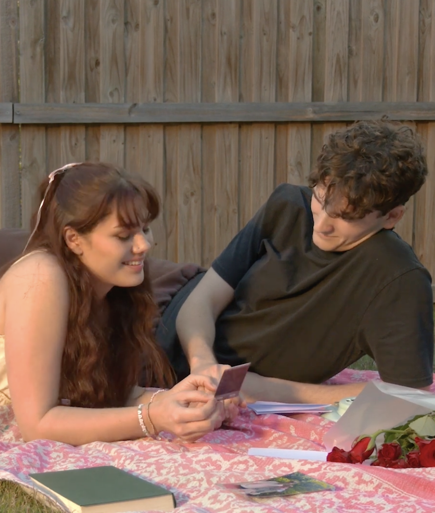

01 / PROJECT
Judas Kiss
Sound Editing · Continuity

About the Project
Add your description of Judas Kiss here.
My Role
Add information about your work as the sound editor and continuity advisor here.
What I Worked On
Add more detail about the sound editing process, tools, challenges and final outcome here.